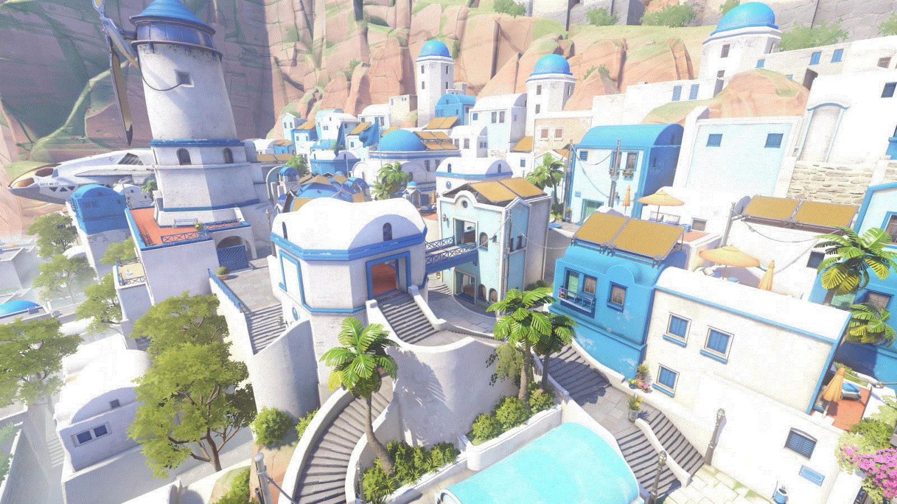
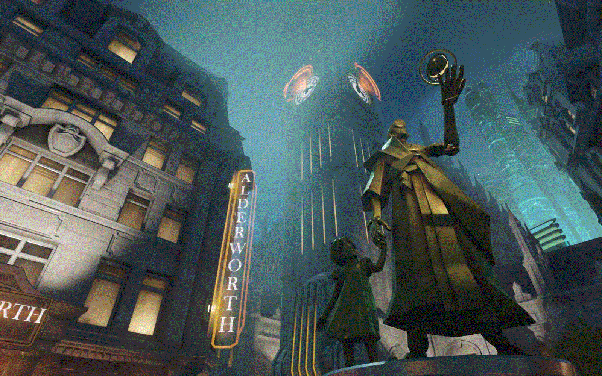

遊戲介紹

是一款6V6的團隊對戰，是以絕地要塞2(Team Fortress 2)為底開發出的第一人稱射擊遊戲。 OW與TF2很相似，裝備對於角色而言沒有太大的影響，並且玩家可以在遊戲中更換英雄，讓一場比賽中能有無限種的組合對戰。 遊戲玩法多樣，不同地圖搭配不同英雄，激發出各種不同的玩法。
角色介紹

在《鬥陣特攻》中，英雄大約分為四種：攻擊型、防禦型、坦克型、輔助型。每種類型的英雄都有他該有的責任，玩家可以玩自己喜歡的類型，配合隊友組成一個各方面具備的隊伍。攻擊型名副其實，主打傷害；防禦型負責守護；坦克承受傷害，幫忙推進；輔助支援隊伍。玩家可以選擇要均衡搭配、主攻、主坦等等，也能創造屬於自己的奇葩隊伍喔！
每隻英雄都有他專屬的技能，這個技能是只有他擁有的，其他英雄並沒有。舉例來說，閃光的回朔只有閃光擁有，這也是閃光的一大特徵之一。與隊友的配合下，有時候可以打出特別的技能連技，大幅度影響戰局。也可以多多利用地形，將敵人卡住或是推下懸崖，完成擊殺。
遊戲玩法
在《鬥陣特攻》中，遊戲類型共分三種：佔領、護送跟控制。每種玩法都有三個獨立的地圖，再加上佔領+護送的玩法，《鬥陣特攻》總共有12張地圖。以下將簡短介紹各玩法：

佔領：
攻擊方展開戰鬥佔領目標，共有三個，需接續佔領；防守方阻止對方，直到時間結束。
攻擊方在佔領點內的人越多，佔領的速度也越快。反之，防守方處在佔領點內便能阻止佔領。
護送：
攻擊方必須將指定目標運送到指定地點；而防守方必須阻止攻擊方，直到時間結束。雙方只要待在護送車一定範圍內，就能影響護送車的行進。
通常被護送的物品都跟地圖有故事相關，玩家可以去探索一番。

控制：
雙方會為了佔領指定目標而交戰；率先贏得兩回合勝利的團隊贏得比賽。
類似佔領，會有百分比條，先達到100%的即完成控制。

佔領+護送：
攻擊方必須先佔領指定地點後，再將目標運送到指定地點；而防守方的目標是攔阻攻擊方。
這組合了兩種玩法，拉長了遊戲也讓雙方有不同的戰術選擇。